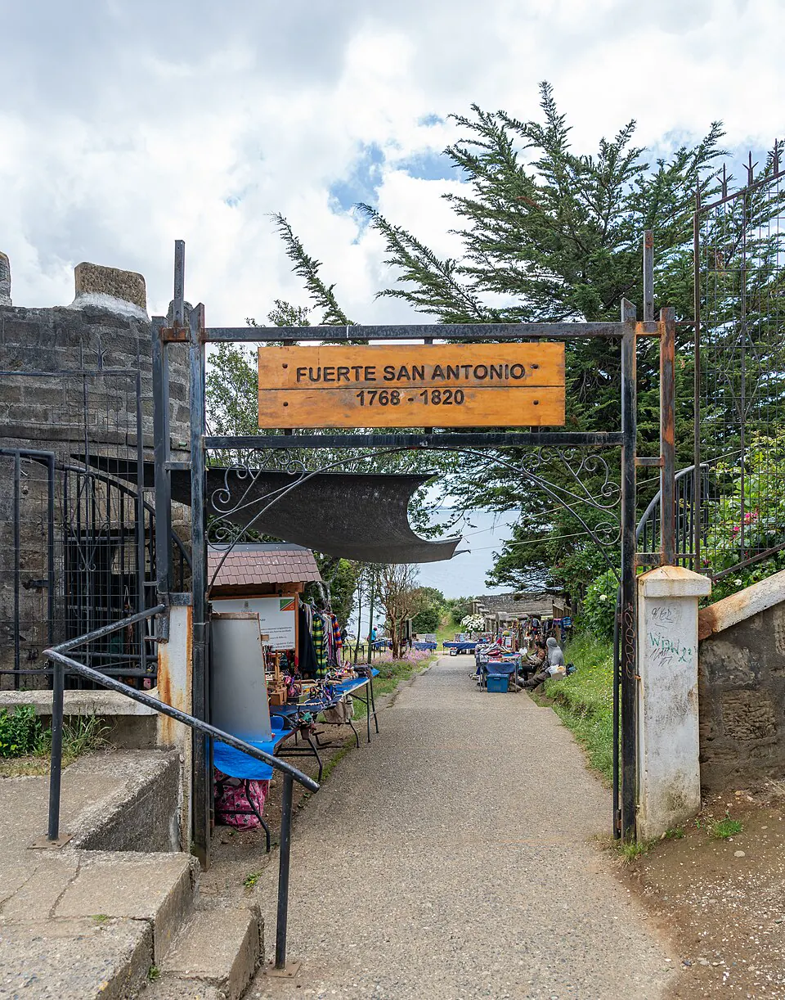

Incorporación de Chiloé

Desde la Colonia, Chiloé dependía estrechamente del Virreinato del Perú, y su población, en gran parte mestiza y huilliche, mantuvo su lealtad a la Corona durante las guerras de independencia. El archipiélago sirvió de base a las expediciones realistas y aportó numerosos soldados. Tras el fallido intento de Lord Cochrane en 1820 y una expedición frustrada de Ramón Freire en 1824, el gobierno organizó una nueva campaña a fines de 1825, cuando Chiloé era uno de los últimos bastiones realistas de América del Sur.
En enero de 1826, las fuerzas de Freire vencieron a las del gobernador Antonio de Quintanilla en los combates de Pudeto y Bellavista, y ambas partes firmaron el Tratado de Tantauco, que incorporó el archipiélago a la república y garantizó a sus habitantes los mismos derechos que al resto de los chilenos. Chiloé se convirtió en provincia, con capital en Ancud. La incorporación puso fin a la presencia española en territorio chileno y aseguró una posición estratégica en el sur, aunque la integración real del archipiélago fue lenta y su cultura conservó rasgos propios.
Versión para niños
Cuando Chile ya era independiente, Chiloé seguía siendo fiel al rey de España. Sus habitantes tenían lazos fuertes con el Perú, y muchos soldados chilotes habían luchado por el rey. En 1824, un primer intento de los patriotas por llegar a la isla fracasó. En enero de 1826, el Director Supremo Ramón Freire llegó con un ejército, ganó los combates y se firmó un tratado. Así, Chiloé pasó a formar parte de Chile.
Para maestros
Nivel sugerido: 6° básico
Objetivo: Explicar por qué Chiloé se mantuvo realista y cómo se incorporó a la república, valorando la diversidad de lealtades que existió durante la independencia.
Preguntas para la clase:
- ¿Por qué los chilotes fueron fieles al rey durante tantos años?
- ¿Por qué era importante para Chile incorporar el archipiélago?
- ¿Qué significa que un tratado garantice derechos a los habitantes de un territorio?
Actividad (20–30 min): En un mapa, el curso marca Ancud, Castro y el canal de Chacao, y elabora una línea de tiempo de Chiloé desde la llegada de los jesuitas (1608) hasta 1826. Luego discute cómo la geografía influyó en su historia.
Fuentes sugeridas: Memoria Chilena; Biblioteca Nacional Digital; Museo Histórico Nacional.
Objetivos de Aprendizaje (Currículum Nacional)
- 6° básico · HI06 OA 05 Describir cómo se conformó el territorio de Chile durante el siglo XIX … entre otros factores
- 8° básico · HI08 OA 19 Evaluar las principales transformaciones y desafíos que generó la independencia de Chile … y la formación de un Estado nacional
- 1° medio · HI1M OA 13 Describir el proceso de ocupación de Valdivia, Llanquihue, Chiloé y el estrecho de Magallanes … destacando el rol de la inmigración europea
Personajes
Revisión humana pendiente. Cómo se revisa · Reportar un error
Cómo citar: Historia de Chile. (2026). Incorporación de Chiloé. En Historia de Chile: atlas y línea de tiempo. https://moises-salgado.github.io/historia-de-chile/momento/incorporacion-de-chiloe.html